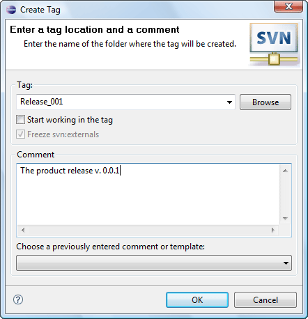

|
|
|
Tag is a snapshot of the project state. You can create a tag of the one specified revision or a tag, containing resources of different revisions. To start tag creating click on 'Team>Tag...' menu item of the resource pop-up menu, 'Tag...' menu item of the SVN main menu group or on the 'Tag...' button on the 'SVN Toolbar'. The 'Create Tag Dialog' will appear.
|
Tip: |
It's recommended to create tags in the repository's 'tag' folder corresponding to the specified repository layout. For information on repository layouts refer to 'Repository layouts' topic. |
This is how the 'Create Tag Dialog' looks like:
| Option | Description | Default |
| Tag | Specifies the name of the tag folder | 'blank' |
| Start working in a tag | If enabled associates your workspace with the created tag. | Disabled |
| Freeze svn:externals | Locks a probability of adding svn:externals for a tag. Inactive if 'always freeze svn:externals for tags' option is enabled. | Disabled |